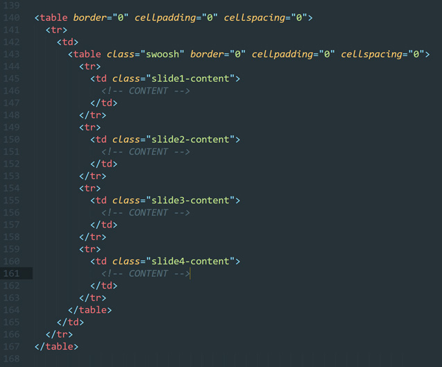
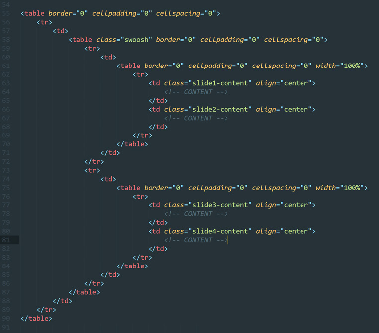

Having recently finished building an interactive carousel module for an email template, the client, account teams and myself were all happy enough with the final result. However today during some downtime I couldn’t help but think about improving this module, mainly in regards to it’s fallback state on unsupported enviroments (Outlook/Webmails/etc..).
Currently the carousel fallback is an entirely seperate hardcoded module placed above the main carousel code. I’d set the carousel to be hidden and fallback displayed as a default, using inline styles and then set the reverse within the CSS media query that checks for enviroment compatibility. The carousel is built as 4 article blocks, whereas the fallback is only 2, so a user could be missing out on content or the client could be losing space to display content to the unsupported enviroments. So I set about tweaking my build to removed the fallback module all together and have the carousel content stack in a 2x2 table.

One of the first issues I encounted with this rebuild was that each article block was originally within it’s own <tr> and would cause the blocks to break out onto 4 separate lines. Initially I tried using MS conditionals to hide a couple of the opening and closing <tr> tags, however this did not work on anything outside of Outlook.
After this I looked at the structure of the content and decided to break up the 4 rows into 2 stacked tables, this would stack them 2x2 as a default. I added some width properties to the slide-content classes, outside of the media query, to help position and space the article blocks. These would then be overwritten within the media query to return to the carousel alignments. While at first it seemed this has achieved what I set out to do, upon a closer examination of Litmus tests it looked like the articles within the carousel now looked misaligned and in the fallback state, the 2x2 grid would no longer responsively stack on mobile views. However, after some actual device testing, everything was lined up for and rendering perfectly.

While I’m unsure if we’ll roll this fix out into our master template for the client, it was a nice bit of self-satisfaction to solve this problem.